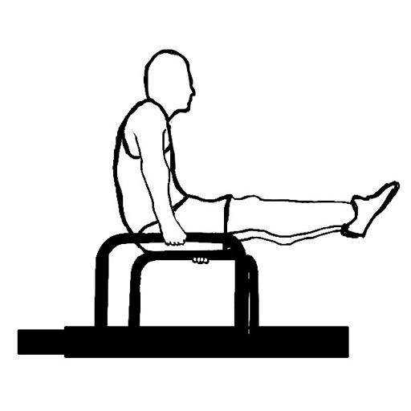
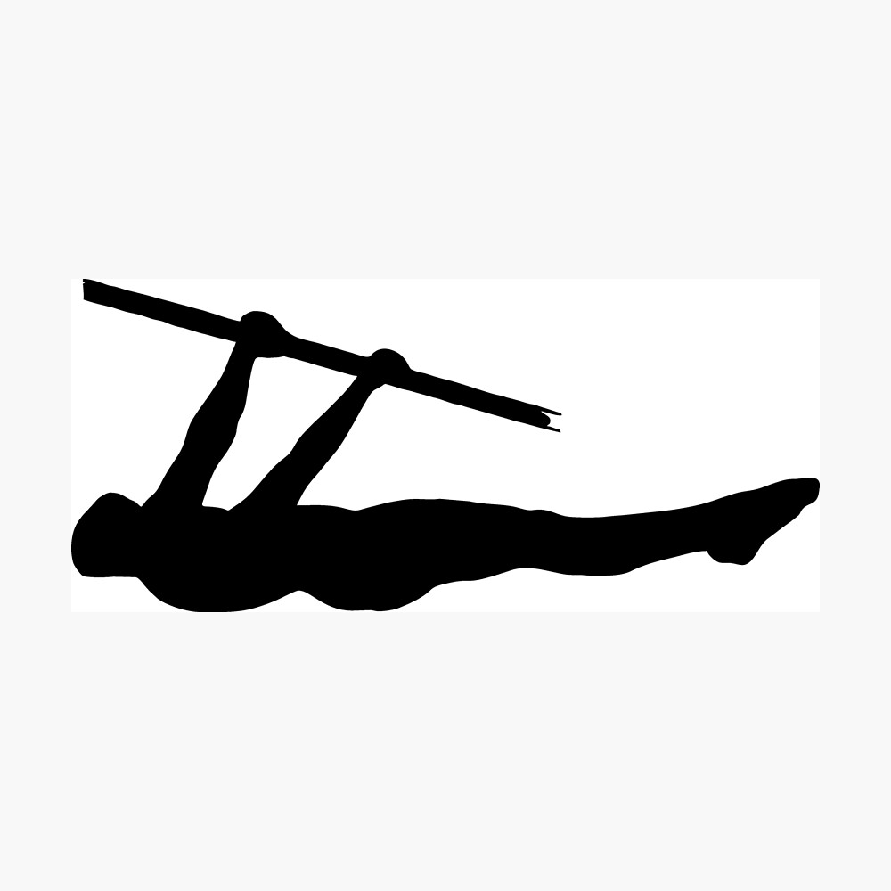
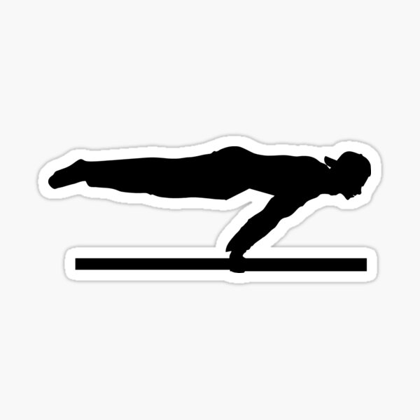

L-sit
Les exercices de sit-up font principalement travailler votre droit de l'abdomen, mais faire le bon sit-up fera également travailler vos obliques et vos muscles abdominaux.

Front lever
Votre grand dorsal doit avoir une force suffisante. Il est donc important de pouvoir effectuer des tractions avec rigueur pour espérer atteindre ce nombre.

La planche
Le muscle principal utilisé dans cet exercice est les deltoïdes antérieur, mais aussi les abdominaux, la poitrine, les épaules, le haut et le bas du dos et les fessiers jouent également un rôle important.
